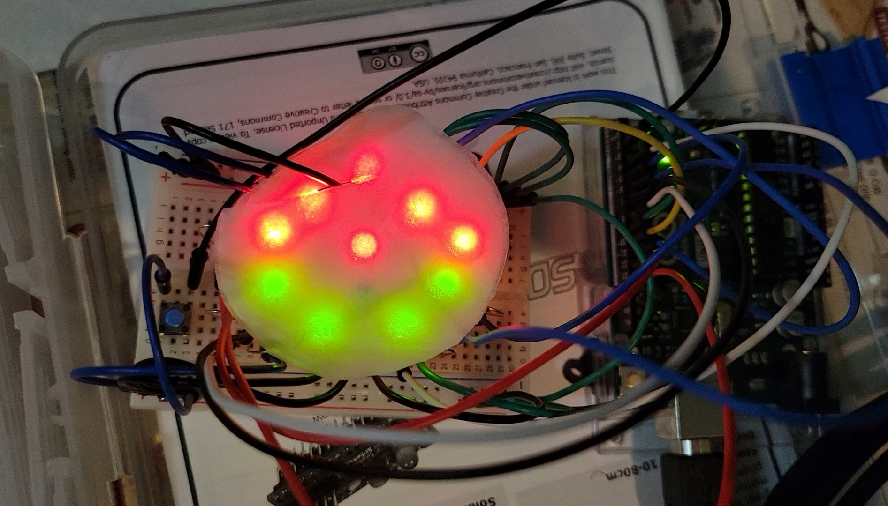
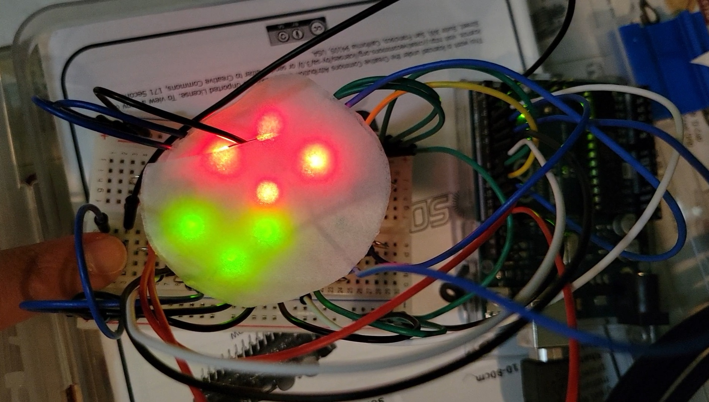
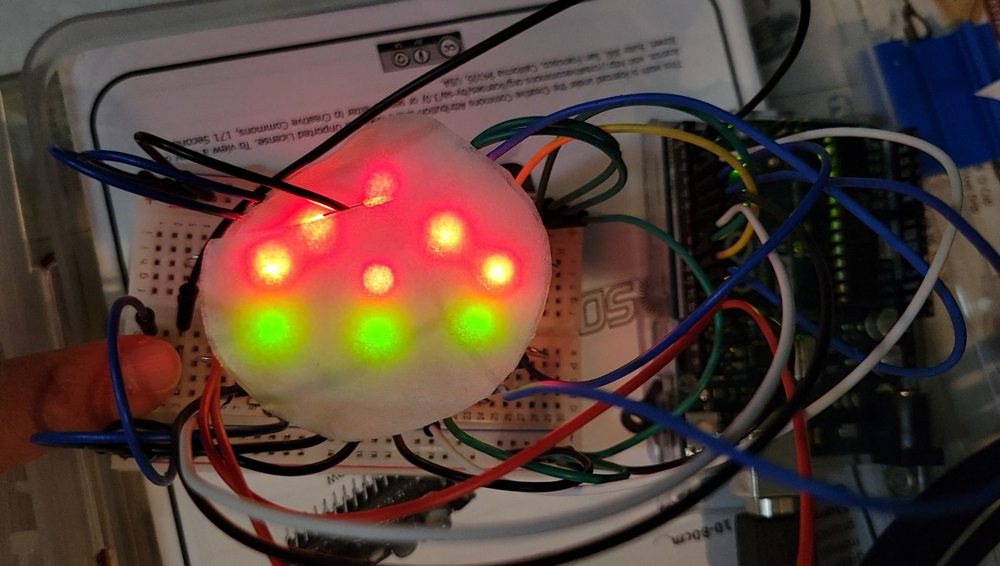
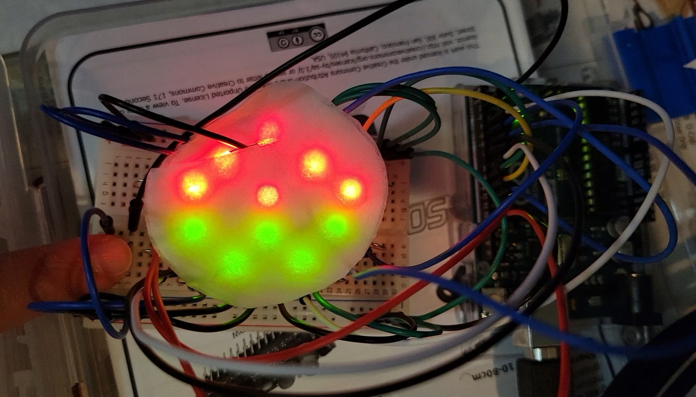
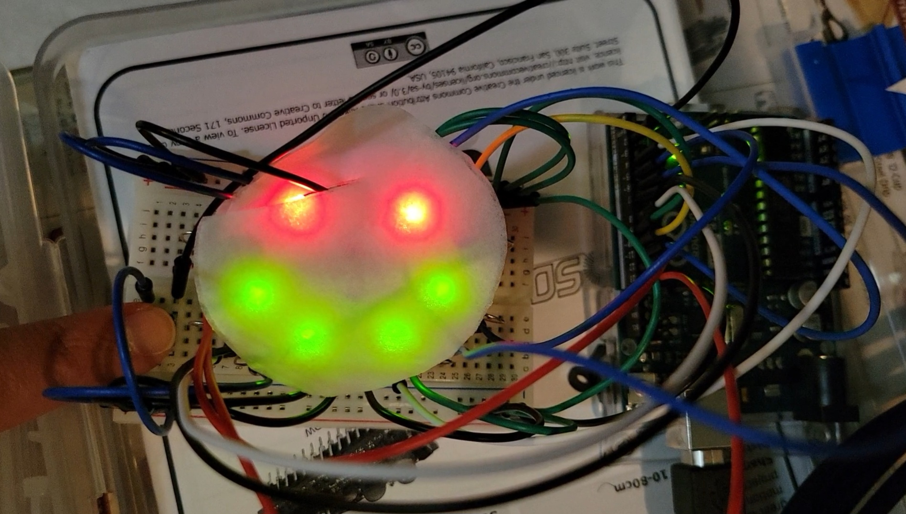
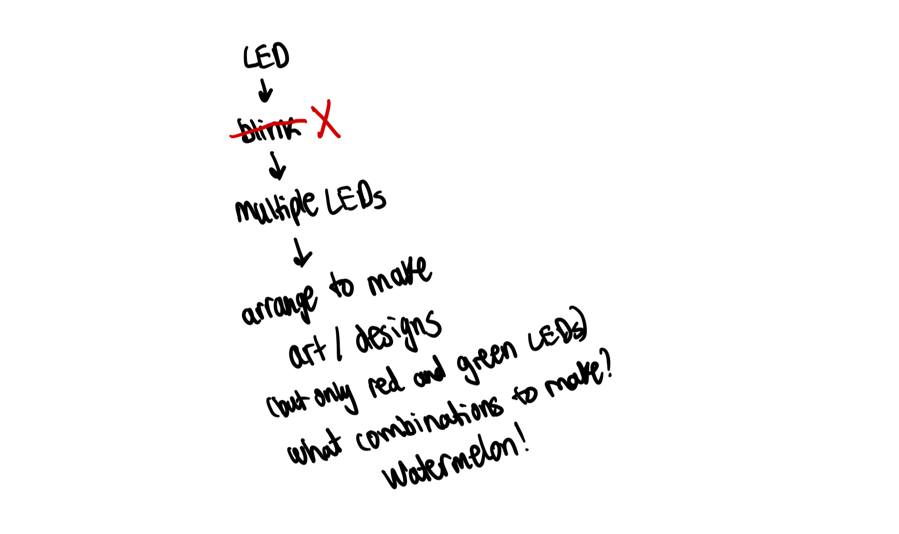
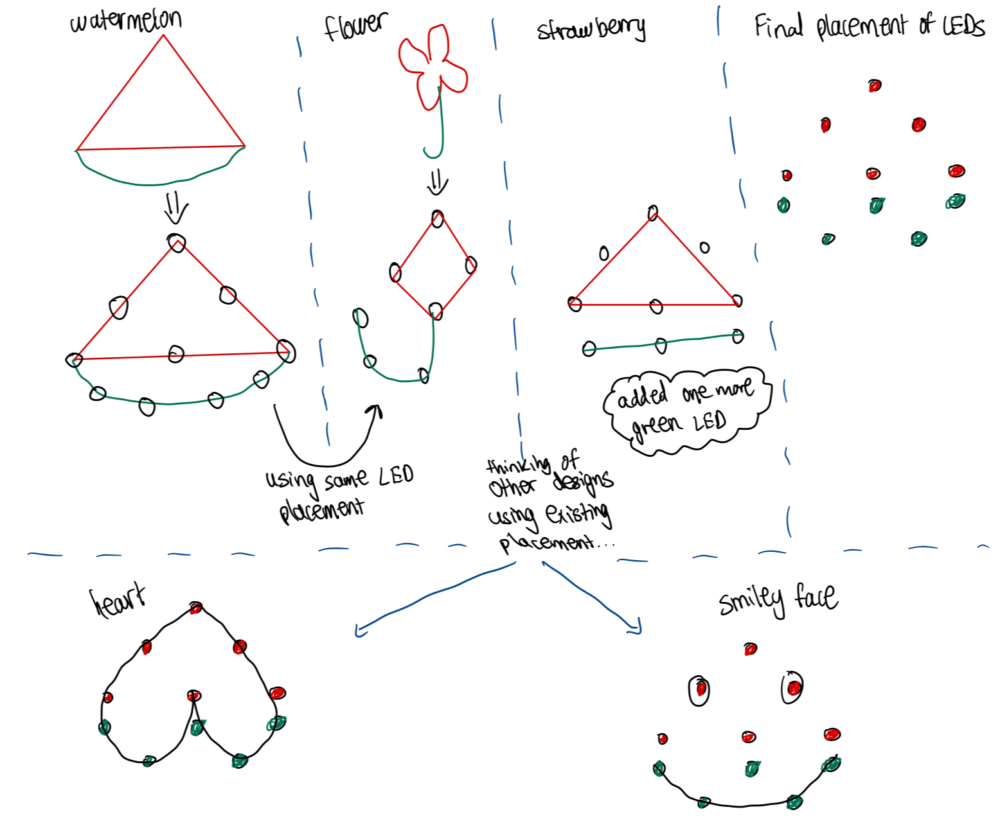
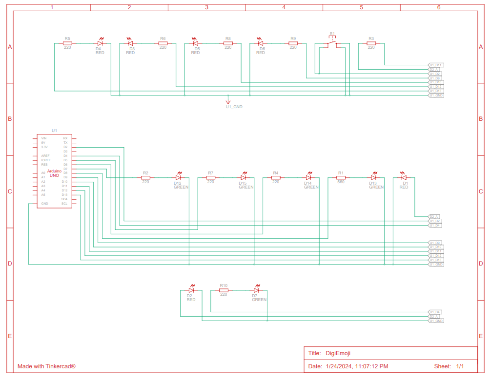

System Documentation
DigiEmoji
DigiEmoji is an interactive IoT digital decor designed to effortlessly transform static living and workspaces into dynamic, expressive environments. Built for users looking to break the monotony of traditional room decor such as static posters and standard desk accessories, this project blends hardware and software to inject personality into any room with minimal user effort.
1. Overview and Concept
The core concept centers on a compact smart display that serves as a modern ambient centerpiece. Instead of cycling through complex widgets or generic photo frames, DigiEmoji focuses on hyper-targeted, high-impact visual expression using universally understood digital iconography.
2. Architecture Development
DigiEmoji is created with LEDs, a pushbutton and an Arduino Uno. Its main purpose is to serve as a piece of homedecor that can instantly enhance the atmosphere of a room (and even one's mind). With five built-in designs that can be controlled with a pushbutton, one has multiple options to choose from based on their mood or liking. Or, if their mood changes, another design is ready to take on the spotlight!
The five designs are: Watermelon, Flower, Strawberry, Heart and Smiley Face. The user is able to iterate through these designs by pressing the pushbutton and the respective LEDs light up for the design selected. As well, once the last design is reached, the first design is displayed after clicking on the pushbutton therefore a cyclic iteration is implemented for the display of designs.
These images below showcase the five designs:
Watermelon:

Flower:

Strawberry:

Heart:

Smiley Face:

The following images display the concept development that took place for this project.


3. Hardware Logic
The hardware architecture is designed for a low-cost, high-visibility IoT device that balances minimal power consumption with a vibrant visual output. Driven by an Arduino Uno microcontroller, the system leverages native 5V digital I/O pins to directly source and sink current for individual matrix nodes within a custom-wired LED Matrix Array. This display module consists of a grid of standard 2-pin discrete LEDs configured in a common-anode or common-cathode row/column layout across a breadboard. To protect the system, inline 220-ohm to 330-ohm resistors are placed on every active row and column channel, limiting the forward current from the Arduino GPIO pins to safe levels of approximately 20mA per pin. This configuration successfully prevents electrical damage to the LEDs while ensuring the microcontroller's ATmega328P chip is never overloaded during operation.
Circuit Schematic Diagram:

4. Core Firmware Implementation
The software implementation leverages lightweight, bare-metal C++ programming to achieve smooth visual rendering and low-latency state changes within constrained hardware environments.